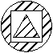
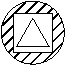
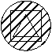

Autodesk AutoCAD 2021: ActiveX Developer's Guide > Create and Edit AutoCAD Entities > About Creating Objects (VBA/ActiveX) > About Creating Hatches (VBA/ActiveX) >
Once the Hatch object is created, the hatch boundaries can be added. Boundaries can be any combination of lines, arcs, circles, 2D polylines, ellipses, splines, and regions.
The first boundary added must be the outer boundary, which defines the outermost limits to be filled by the hatch. To add the outer boundary, use the AppendOuterLoop method.
Once the outer boundary is defined, you can continue adding inner boundaries. Add inner boundaries with the AppendInnerLoop method.
Inner boundaries define islands within the hatch. How these islands are handled by the Hatch object depends on the setting of the HatchStyle property. The HatchStyle property can be set to one of the following conditions:
| Hatch style definitions | ||
|---|---|---|
| HatchStyle | Condition | Description |
|
 | Normal | Specifies standard style, or normal. This option hatches inward from the outermost area boundary. If AutoCAD encounters an internal boundary, it turns off hatching until it encounters another boundary. This is the default setting for the HatchStyle property. |
|
 | Outer | Fills the outermost areas only. This style also hatches inward from the area boundary, but it turns off hatching if it encounters an internal boundary and does not turn it back on again. |
|
 | Ignore | Ignores internal structure. This option hatches through all internal objects. |
When you have finished defining the hatch it must be evaluated before it can be displayed. Use the Evaluate method to do this.
This example creates an associate hatch in model space. Once the hatch has been created, you can change the size of the circle that the hatch is associated with. The hatch will change to match the current circle size.
Sub Ch4_CreateHatch() Dim hatchObj As AcadHatch Dim patternName As String Dim PatternType As Long Dim bAssociativity As Boolean ' Define the hatch patternName = "ANSI31" PatternType = 0 bAssociativity = True ' Create the associative Hatch object Set hatchObj = ThisDrawing.ModelSpace.AddHatch(PatternType, patternName, bAssociativity) ' Create the outer boundary for the hatch. (a circle) Dim outerLoop(0 To 0) As AcadEntity Dim center(0 To 2) As Double Dim radius As Double center(0) = 3: center(1) = 3: center(2) = 0 radius = 1 Set outerLoop(0) = ThisDrawing.ModelSpace.AddCircle(center, radius) ' Append the outer boundary to the hatch ' object, and display the hatch hatchObj.AppendOuterLoop (outerLoop) hatchObj.Evaluate ThisDrawing.Regen True End Sub